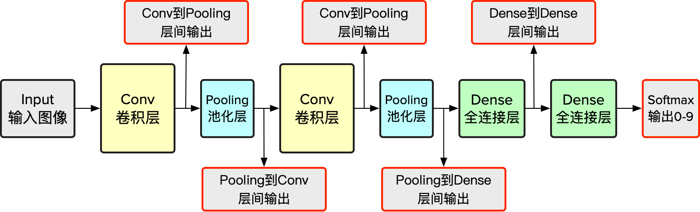

“什么是模型预处理？”、“我们为什么要模型预处理？”、“我们该怎么模型预处理？”本篇模型预处理简介将解答这些问题。
什么是模型预处理？
模型预处理，或者是模型预处理过程一般包含三个步骤：
- filter_center_focus 选择你需要提取层间数据的中间层；
- filter_center_focus 从中间层提取所需要的数据；
- filter_center_focus 将原有模型转换为 TensorSpace 所支持的模型格式。
为什么需要模型预处理？
TensorSpace 提供了一个非常灵活的框架，使用类似搭积木的方式设计模型结构。
TensorSpace 提供了一个3D可视化交互空间，让模型中层之间的链接，最终输出的形状更加直观，便于展示。但大多数已经训练好的模型多用于推断，只提供一个最终输出。所以我们需要模型预处理，生成一个会生成层间输出（多输出）的模型。
例如，一个 MNIST 手写字符模型，常见的预训练模型（ TensorFlow 或 Keras ）只有一个最终输出，即经过最后 softmax 层的输出值（10个0-1之间的一个数，表示0-9数字的可能概率），如下图所示

图1 - 传统情形下的单一输出
TensorSpace 十分吸引人的一点在于，通过获取层间输出并渲染到3D实体上，使用者可以同时观察到模型结构和层间输出，信息密度更高，更直观。而且可以呈现出每一层对输入数据的直接处理结果，完美了解如何一步一步得到最终预测结果。
为了达成这个效果，相对于图1，需要对模型进行预处理，使得可以从网上下载得到的预训练模型不仅仅输出最终结果，还会输出层间结果，而本教程就是为了说明如何定位层间节点的位置，如果生成多输出（层间输出）预训练模型，如下图所示

图2 - 拥有中间层输出的 TensorSpace 适配模型
如何预处理？
通过预处理，将传统单一输出的神经网络模型转换为拥有中间层输出的 TensorSpace 适配模型。
基于不同的神经网络构造框架，细分了不同的预处理教程。
filter_center_focus
TensorFlow 模型预处理
filter_center_focus
Keras 模型预处理
filter_center_focus
tf.keras 模型预处理
filter_center_focus
TensorFlow.js 模型预处理